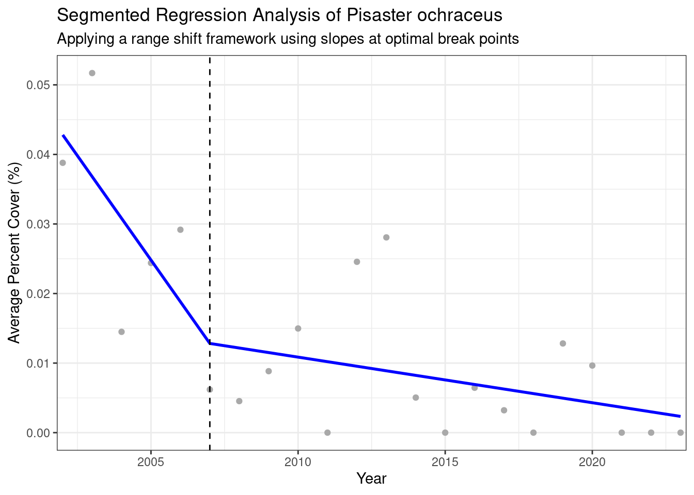

Code
library(here)
library(ggplot2)
library(tidyverse)
library(segmented)Analyzing historical abundance trends of intertidal species near Point Conception
library(here)
library(ggplot2)
library(tidyverse)
library(segmented)longterm <- read.csv(here("data", "phototranraw_download.csv"))# (2002-2024)
longterm_clean <- longterm %>%
filter(state_province == "California" & island == "Mainland") %>%
filter(!lumping_code %in% c("ROCK", "SAND", "TAR", "NONCRU")) %>%
mutate(year = year(survey_date))# Pisaster ochraceus (2002-2023)
species <- longterm_clean %>%
filter(lumping_code == "PISOCH") %>%
filter(latitude > 34.03853 & latitude < 35.88387) %>%
group_by(year) %>%
summarize(avg_pct_cover = mean(percent_cover, na.rm = TRUE))# Linear model
lm_model <- lm(avg_pct_cover ~ year, data = species)
summary(lm_model)
Call:
lm(formula = avg_pct_cover ~ year, data = species)
Residuals:
Min 1Q Median 3Q Max
-0.0150860 -0.0082569 -0.0007229 0.0076094 0.0247304
Coefficients:
Estimate Std. Error t value Pr(>|t|)
(Intercept) 3.0013826 0.7300381 4.111 0.000542 ***
year -0.0014850 0.0003628 -4.094 0.000565 ***
---
Signif. codes: 0 '***' 0.001 '**' 0.01 '*' 0.05 '.' 0.1 ' ' 1
Residual standard error: 0.01079 on 20 degrees of freedom
Multiple R-squared: 0.4559, Adjusted R-squared: 0.4287
F-statistic: 16.76 on 1 and 20 DF, p-value: 0.0005651# Segmented model
seg_model <- segmented(lm_model, seg.Z = ~year) # npsi = 2 (parameter to quanitfy n breaks)
summary(seg_model)
***Regression Model with Segmented Relationship(s)***
Call:
segmented.lm(obj = lm_model, seg.Z = ~year)
Estimated Break-Point(s):
Est. St.Err
psi1.year 2007 2.063
Coefficients of the linear terms:
Estimate Std. Error t value Pr(>|t|)
(Intercept) 12.049825 6.089489 1.979 0.0633 .
year -0.005998 0.003039 -1.974 0.0640 .
U1.year 0.005342 0.003076 1.737 NA
---
Signif. codes: 0 '***' 0.001 '**' 0.01 '*' 0.05 '.' 0.1 ' ' 1
Residual standard error: 0.009609 on 18 degrees of freedom
Multiple R-Squared: 0.612, Adjusted R-squared: 0.5473
Boot restarting based on 6 samples. Last fit:
Convergence attained in 2 iterations (rel. change 2.2185e-07)# Add predicted values from segmented model
species$predicted <- predict(seg_model)# Extract estimated breakpoint(s)
breakpoints <- seg_model$psi[, "Est."]
breakpoints[1] 2007# Plot segmented model
ggplot(data = species, aes(x = year, y = avg_pct_cover)) +
geom_point(color = "darkgrey") +
geom_line(aes(y = predicted), color = "blue", linewidth = 1) +
geom_vline(xintercept = breakpoints, linetype = "dashed", color = "black", linewidth = 0.5) +
scale_x_continuous(expand = c(0, 0.2)) +
labs(x = "Year",
y = "Average Percent Cover (%)",
title = "Segmented Regression Analysis of Pisaster ochraceus",
subtitle = "Applying a range shift framework using slopes at optimal break points") +
theme_bw()